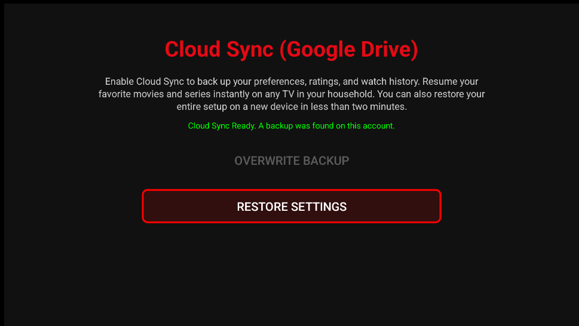

6. Cloud Sync

Screenshot needed: 14-cloud-sync.png'">What does it do?
Syncs between TVs in the same home with the same PIN:
- Continue Watching, ratings, My List
- Browse filters (Movies/Series)
- Profiles and IPTV sources
- Many settings (audio, subtitles, player, Live TV)
- Live TV folders, favorites, and custom XMLTV lists
Setup
- Sign in on the primary profile
- Settings → Accounts & Connections → Google Drive
- Google account + choose a PIN you will remember
- Repeat on the other TV with the same PIN
How fast?
- Same network: often a few seconds
- Otherwise: typically within ~15 seconds while the app is open
Each TV can have a different active profile — that is normal. Premium must be active on both TVs (restore purchase in Google Play or Amazon Appstore).